Your database client, your HTTP client, your terminal, your Git client and your AI
agents — in a single 50 MB binary. No Electron, no JVM, no account and no telemetry: your
credentials encrypted on your machine and nothing leaving it.
Oracle
PostgreSQL
SQLite
SQL Server
Redis
MongoDB
HTTP
SSH · SFTP
Git
Claude Code
Codex
Antigravity
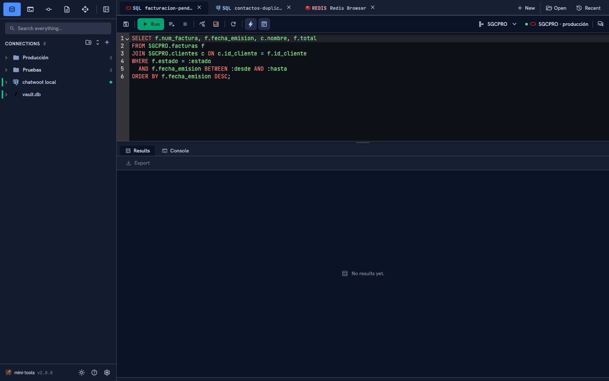
One module at a time in the sidebar, and the one you're using gets the full height.
Why it exists
Real work crosses over all the time: you look at a log on the server, run a query, test the endpoint
that uses it, find the commit that broke it and write it down for whoever comes next. mini-tools puts
all of that in a single window, with a single encrypted place where the credentials live.
One binary, zero install
Go + Wails: it uses the system WebView. No Electron, no JVM, no Node running in the background.
Your credentials, yours
Every DSN, SSH password and private key is encrypted with AES-256-GCM. The key is derived from your master password with Argon2id and is never stored anywhere.
No telemetry, no account
No sign-up, no app server, nothing is sent. The only thing that goes out to the internet is what you point it at: your database, your server, your API.
Your agents, inside
Claude Code, Codex and Antigravity with their full terminal or a native chat, with context from the module you're in.
Production warns you
Mark a connection as production and every destructive statement asks for explicit confirmation before it runs.
English and Spanish
Interface, error messages and documentation. Tooltips explain the consequence instead of repeating the button's name.
Choose your master password when it starts. It's the one that encrypts everything else.
Windows
Download the portable .exe from Releases. There's no installer: it runs wherever you put it.
SmartScreen may warn "Windows protected your PC" for the same reason as Gatekeeper: More info → Run anyway.
Choose your master password when it starts.
Important
The master password is not stored
anywhere: if you lose it, the vault is lost and there's no recovery. That's exactly what makes a
stolen backup useless. You can ask it to remember the password on that machine, and then it's kept by the
operating system's keychain, not by the app.
Build from source
If you'd rather build it yourself, you need Go 1.26+, Node 20+, pnpm and the Wails v2 CLI:
git clone https://github.com/rafael180496/mini-tools
cd mini-tools
# frontend dependencies
cd frontend && pnpm install && cd ..
# development, with hot reload
wails dev
# production binary
wails build
Note
No CGO. Every driver is pure Go, so it
builds and ships as a single executable with no system dependencies.
pnpm comes from corepack
Don't install it with
npm install -g pnpm. Global npm packages are per Node version, so the next
nvm install leaves it behind and the build dies with
exec: "pnpm": executable file not found in $PATH — an error thrown by wails, because it's the
one running pnpm install, and it tells you neither the cause nor the fix. The scripts in
scripts/ enable it on their own; by hand it's corepack enable pnpm.
This help, from the app
The ? button at the bottom of the sidebar —and the Documentation link at the
bottom of Settings— open this page in your browser, so you don't need to remember the address.
Your first connection
You don't need to fill the form field by field: paste the string you already have and the
app works out the engine and the rest.
Create the connection
Sidebar → Connections module → +.
Choose the engine, or better: paste the connection string you already have in a .env and the form fills itself in, detecting the engine.
Test connection if you want, but it isn't required: you can save a connection to a server that's down right now.
Mark it as production if it is. From then on every UPDATE, DELETE or DROP asks for confirmation.
Double-click the connection and an editor tab bound to it opens. ⌘↵ / Ctrl+↵ runs.
Mark production
The environment marker isn't decorative: it paints the connection in the tree, in the editor bar and in
the footer of its SSH terminal, with its name and color —red with a glow for production—,
and it turns on the Production Guard: an UPDATE or DELETE without
a WHERE won't run without a confirmation that says how many rows it will touch, and in the
terminal of a server marked as production, destructive commands ask for confirmation too.
Organize with folders
Connections are grouped in folders (Production, Testing, a client, a project). Folders are
just organization: they never change which connection is active or which one a query runs
against.
The window: modules and tabs
A sidebar with six modules —one at a time—, tabs in the center and a panel below.
Everything you drag or collapse is remembered between sessions.
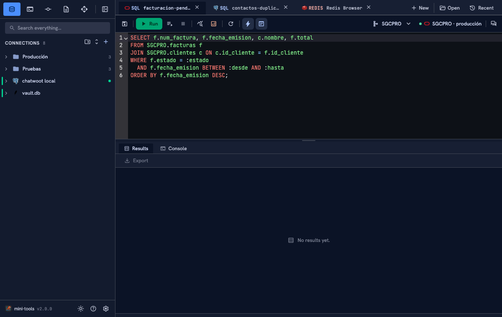
The counters over each icon tell you which module holds what you're looking for.
The six modules
Module
What it's for
Connections
Databases: explore the schema and run queries
SSH
Remote servers: open a terminal or transfer files
Git
Repositories: see changes, branches and work with the agents
Notes
Your encrypted knowledge base: runbooks and notes
HTTP
Request collections: test and save endpoints
Utilities
System tools, each in its own tab: Port Killer (who holds a port), Activity Monitor (live processes, CPU and memory) and Docker (containers, images, volumes, networks, logs and Compose)
You see one at a time, so the one you're using gets the full height instead of the
strip the others used to leave it when stacked.
One search for all of them
The box at the top filters all six modules at once, and each icon shows how many
matches it has. That's what saves you from deciding up front where to look for something you
only remember by name.
Tabs and panels
Tabs are labeled by type (SQL, REDIS, HTTP, note, terminal, repository, utility) and each SQL tab is bound to a connection from its own selector — never as a side effect of browsing the sidebar. Drag them to reorder, and close them with the ✕ or with a middle-click, like in VS Code.
The bottom panel has Results and Console (plus DBMS_OUTPUT and the execution plan when there's something to show); drag it to change its height.
The editor bar is a single row of icons: on the left what you press (save, run, explain, refresh), on the right what the tab runs against (schema and connection) and the chat. What each button does —and its shortcut— is in its tooltip.
Drag the sidebar to change its width, or hide it entirely, leaving a column of icons. Width, open module and editor height are saved between sessions.
The five sidebar trees (connections, SSH, Git, notes and HTTP) all behave the same: an icon per type —folder, database engine, server, repository, branch, note, HTTP method—, guide lines per level and a button in the header to collapse or expand everything. Right-clicking any row, or the empty space, opens its menu with every action (rename, duplicate, move to another folder, copy, delete…); the ⋯ button that appears on hover opens the same one. It also works from the keyboard: arrows, Enter and Esc.
Explore the schema
Six engines with the same tree, the same editor and the same grid: Oracle, PostgreSQL,
SQLite, SQL Server, Redis and MongoDB.
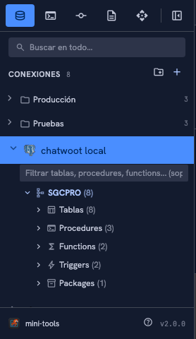
The tree also searches inside procedures, functions, triggers and packages — not just tables.
What the tree shows
Connection → schema → categories. Tables go in their own collapsible category, always sorted
alphabetically (tested against a real schema of 342 tables); next to them are Procedures, Functions,
Triggers and Packages, each with its counter.
Search inside the schema
The filter at the top of the tree isn't limited to table names: it also finds procedures, functions,
triggers and packages. It's the difference between searching for FACTURA and finding the
table, or also finding the PR_FACT_ACTUALIZAR that is what you were really after.
View and export the DDL
Clicking a procedure, function, trigger or package opens its DDL in a viewer.
From the tree itself you can export the DDL of one object or of an entire schema.
Double-clicking a table inserts a query against it into the active editor.
The viewer shows the DDL exactly as the engine returns it, with the same highlighting as the editor.
Inside: Ctrl+F searches, Wrap toggles between wrapping long lines at the
panel width or letting them run with horizontal scroll, Copy puts it on the clipboard and
Export saves it as .sql. At the bottom it says how many lines and how big it
is, so you know whether what you see is all of it. Close it with Esc or by clicking
outside.
Tip
If the schema has hundreds of objects, restrict which
schemas the connection scans from its settings dialog: the full scan of a large catalog is the only thing
in the whole module that genuinely takes time.
Write and run queries
Autocomplete that understands where the cursor is, 46 expansion shortcuts, and execution
that streams statement by statement.
Context-aware autocomplete
Autocomplete understands where the cursor is: it suggests tables after FROM,
columns limited to the tables the query actually references after SELECT or
WHERE, and resolves aliases when you type a dot.
SELECT c.▮-- columns of CLIENTES, because c is its alias
FROM SGCPRO.CLIENTES c
JOIN ▮-- suggests the complete JOIN from the foreign key
Ctrl+Space forces it where it doesn't open on its own, and Tab accepts the grey suggestion.
Expansion shortcuts
It ships 46 common shortcuts (up to 64 depending on the engine). Type the three letters
and Enter:
Shortcut
What it inserts
sel
SELECT … FROM … WHERE … with placeholders to tab between
in · bet · like
The conditions you mistype exactly when you need them
ljoin · sjoin
LEFT JOIN, and the self-join of a table with itself for hierarchies
nulls · minmax
Profile a column you don't know: how many nulls, minimum, maximum and distinct values
cols · size · act
Catalog, table sizes and running queries — in your engine's syntax
tx
A transaction with each engine's error handling
Run
⌘↵ / Ctrl+↵ runs the selection, or the statement under the cursor if nothing is selected.
Block (Ctrl+Shift+↵) runs a complete PL/SQL block, with DBMS_OUTPUT captured.
Results arrive live, statement by statement, and can be cancelled on the fly. A multi-statement script opens one result per statement, in tabs you can close one by one or all at once.
Running doesn't block anything. While a long query runs you can run another: in another tab, against another connection, or in the same tab — the new run appends its "Result N" after the previous ones instead of overwriting them. Results, console and cancellation belong to the tab that asked for them, and the tab that's working shows a spinning ring on its label, so you can see it from any other.
Auto-commit is the lightning icon in the bar, lit when it's on: one click switches to manual transactions, and then Commit and Rollback appear next to the "Transaction open" notice. There's never any doubt about whether a change was committed — and no greyed-out buttons waiting for the 1% of the time they're useful.
Where everything is
A single bar above the editor. On the
left what you press —save, run, block, cancel, Explain, Explain Analyze, refresh— plus the auto-commit and
DBMS_OUTPUT toggles; on the right the schema, the connection and the chat. They're icons: the
name, the shortcut and the why of each one are in its tooltip, and the only one that keeps its label is
Run. In Settings → Appearance → Action bar you choose whether Run shows its
name ("Normal"), whether nothing does ("Compact") or whether the bar isn't shown at all ("Hidden"; the
shortcuts keep working). The outcome of the last run lives at the bottom of the results panel, right next
to the grid it describes.
The execution console
Its own tab next to Results, DataGrip style: it logs each statement of the script with its full text
and a timestamped result line — N rows fetched in 412ms, completed in 1h 9m 26s 452ms, or
the full error, untrimmed. The duration is written in hours, minutes and seconds as soon as it passes one
second; the exact figure in milliseconds stays in the tooltip. It activates by itself for any script with
more than one statement, and it's a running log of the session: what you ran half an hour
ago is still there until you press "Clear console".
The SQL is shown with the same colors as the editor (keywords, types, literals, comments
and bind parameters), and failures are visible without reading: a red bar along the side of the entry, the
message in its own block with the engine code —ORA-01843, PLS-00201— highlighted,
and the count of failed entries in the header.
It's the only record
The console replaced the query history
that lived in a separate tab until 2.4.0: it said the same thing with less context and on another screen.
The app no longer saves the statements you run to disk, and on update it deletes the ones it had
saved before — the console lives in memory and starts empty every session.
Production Guard
On a connection marked as production, an
UPDATE or DELETE without a WHERE won't run without a confirmation that
says how many rows it will touch.
The only thing that waits
With an open
transaction (auto-commit off), runs on that connection happen one at a time. It isn't an interface
limitation: with auto-commit off the engine reserves a single connection to that database, so two
runs wouldn't go in parallel — they'd be interleaved in the same session and inside the same transaction,
where a Commit from either side commits the other's work. The status bar says so and suggests the way out:
wait, or Commit/Rollback.
Pagination and a shared connection
The engine keeps
one paused cursor per connection. If a result was left with "Load more" and you run another
query on that same connection, that cursor is closed: the result switches to saying "pagination
closed" instead of offering a button that no longer works. To keep reading, run the query again — or use
another connection for whatever you were going to run in the meantime.
Closing a tab that's running cancels its query and takes its console and results with
it: it's the only action that leaves them with nowhere to be shown.
Parameters
Type :since and the app asks for the value before running. It never goes into
the SQL text: it travels separately and is bound as a driver argument.
How to use them
SELECT * FROM INVOICES
WHERE ISSUE_DATE BETWEEN :since AND :until
AND STATUS = :status
When you run it, a form appears with one field per parameter, with its type (text, number, boolean or
NULL). The values are remembered per tab, so re-running the same query with the
same values is pressing ⌘↵ twice.
What it recognizes, and what it doesn't
It recognizes :name in all four SQL engines, $1 in PostgreSQL and ?
in SQLite/SQL Server. And —more importantly— it recognizes what is not a parameter: PL/SQL's
:=, the :: of a cast, a trigger's :NEW/:OLD, and anything
inside a literal, a comment or a CREATE PROCEDURE.
Why it matters
A parameter that gets concatenated is an
injection waiting for someone to paste an apostrophe. Here the SQL text that travels to the engine is always
the one you wrote, with the values as separate arguments.
Edit rows from the grid
Double-click a cell and the app writes the UPDATE with its WHERE
on the primary key. The change stays pending until you send it.
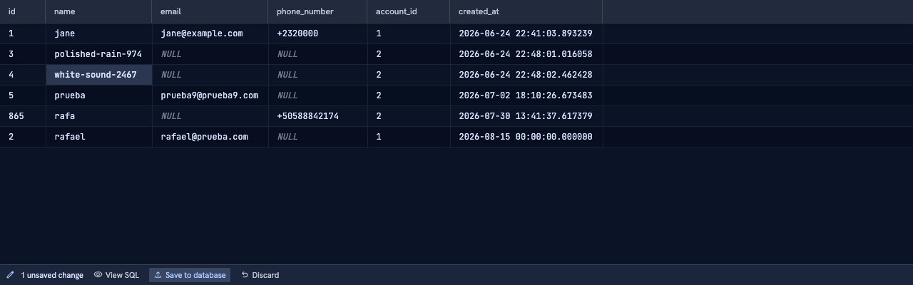
The bottom bar says how many unsaved changes there are, and lets you see the SQL before sending it.
How it works
Double-click the cell and fix the value. The editor depends on the type: a date and time picker for a timestamp, a dropdown for a boolean, a numeric field for a number — with NULL as a separate button, because "no value" and "empty text" aren't the same thing.
The change stays pending and marked. That delay is on purpose: it lets you see the exact SQL first, change your mind, and send several changes together.
View SQL shows a preview of what's about to run.
⌘↵ / Ctrl+↵ sends them. Discard throws them away.
The rule that governs the feature
Never write a row that can't be identified beyond any doubt, because a
WHERE that matches too much can't be undone with Ctrl+Z. That's why editing is only offered
when:
the query comes from one table —no JOIN, no GROUP BY, no subqueries—;
that table has a primary key;
and the complete key is in the result.
When it can't, the grid tells you why instead of hiding the button.
The transaction
Each UPDATE runs in a transaction and has to affect exactly one row: if it
affects any other number, the whole batch is rolled back and it explains why —two rows with the same key
means the key wasn't unique, and a broken promise there is worth more than the change. Values travel as
parameters, never concatenated.
It stays in the console, with the values
Saving leaves in that tab's Console the exact statements that ran, with their
duration and how many rows they touched, marked as "Grid edit" to tell them apart from what
you wrote yourself. There's a single entry per save, because the whole batch is one transaction: either all
of them went in or none did. If the batch was rolled back, the entry says so with the engine's error.
Under each statement go its values: the UPDATEs travel parameterized, so on
their own they'd say which column was touched but not with what. Each bind comes with its number, its column
and its value, and at the end the previous value — which isn't in any statement and is the
only thing that lets you undo it by hand.
UPDATE SGCPRO.FUECICLO SET LECT_ACT = :1 WHERE NIS_RAD = :2 AND SEC_NIS = :3
:1 LECT_ACT = '1543' :2 NIS_RAD = '88213' :3 SEC_NIS = '1' (was '1200')
Why it matters
It's the easiest write to make without noticing
—a double-click on a cell— and it was the only one in the application that left no trace. Now "what did I
do to this table today" is answered by looking at the console, just like any other run.
Copy and export results
Select rows and they come out as CSV, INSERT or UPDATE ready to
paste into another environment — with the real table and the dates converted for the target engine.
Column widths
Each column starts as wide as what it holds: a seven-digit id column is narrow and a
description column fits entirely, instead of all of them being the same width and half the table ending up
cut off with ….
The line between two columns is also the handle: drag it to change the width —it
highlights on hover— and double-click it to fit the content. Whatever you move by hand is
kept when you re-run the query or fetch more rows; it goes back to automatic width when the result brings
different columns.
Select rows
Like in any file explorer, and with the same gestures as the SFTP panel: a single click selects that row,
Ctrl/Cmd+click adds or removes one without losing the rest,
Shift+click selects the range from the last row you touched, and
Ctrl/Cmd+Shift+click adds that range to what was already selected.
Ctrl/Cmd+A selects every loaded row and Esc clears; a single
click on the only selected row also deselects it.
Rows, not letters
With a modifier held down the grid selects
rows: it doesn't let the browser extend its text selection, which is what used to paint the
letters blue and hide the highlight. Without modifiers you can still select text by dragging inside a cell,
to copy a single value by hand.
Copy rows as SQL you can run
The table and schema are the real ones: the app reads them from where the query came
from, not from the connection's name. And dates are converted using each column's real type,
as declared by the driver for that result:
TO_DATE(…), or TO_TIMESTAMP(…) if the column has fractional seconds (which TO_DATE would silently truncate)
PostgreSQL
TIMESTAMP '…' / DATE '…'
SQL Server
CAST(… AS datetime2) / CAST(… AS date)
SQLite
The text literal: it has no date type, it stores the ISO string as is
Without this the date traveled as ISO text and Oracle rejected it with ORA-01861 unless the
NLS_DATE_FORMAT of whoever ran it happened to match — which is exactly what a generated statement
can't take for granted.
Note
When the query does not come from a single
table —a JOIN, a view, a subquery— the name is left as tabla on purpose: making it
obvious that it needs filling in is better than a plausible name that doesn't exist. If it comes from a single
table the catalog doesn't know —a synonym, a table on the other side of a DB
link, or a connection whose catalog hasn't been read yet— the name comes out anyway, written exactly
as you wrote it in the SELECT; what you can't do there is edit the grid, because without a catalog
there's no primary key to guarantee the UPDATE touches a single row.
Copy as UPDATE
You get one UPDATE per row, with a WHERE that matches every
column as a conservative default, and a comment on top asking you to adjust it to the real primary key before
running it.
Export to a file
Format
What it exports
CSV · JSON · XLSX
The query result, with a native dialog to choose where
DDL
Of a single object or a whole schema, from the tree
Connection settings
Without passwords: they're redacted before the file is written
Execution plans and history
EXPLAIN on whatever you're looking at, and a per-connection log of everything you ran.
EXPLAIN and EXPLAIN ANALYZE
They run on the selection, or on the statement under the cursor — not on the whole file.
The plan is drawn as a visual tree, with full table scans highlighted, which is what you came
looking for.
Careful
EXPLAIN ANALYZE runs the query.
The button says so explicitly, because on a write statement the difference between EXPLAIN and EXPLAIN ANALYZE
is that one of them executes it.
Linter
It flags SELECT * as a visual hint —it doesn't block anything— and asks for confirmation
before an UPDATE or DELETE without a WHERE.
Redis and MongoDB
They aren't SQL databases, so they have no query editor or table grid: they have their own
explorer, with the same tree and the same vault.
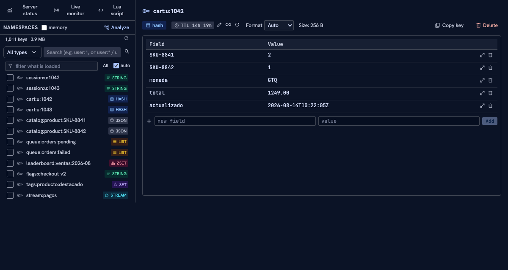
Redis Browser: key list with type and TTL, and an editable detail on the side.
Redis
A key tree in the sidebar under the expanded connection, and a full-tab Redis Browser for serious work.
Inline editing of strings, hashes, lists, sets, sorted sets and JSON — preserving the TTL, which is the classic mistake when editing a key by hand.
A command console with autocomplete for that connection's keys.
MongoDB
An explorer of databases and collections, with the collection list cached per connection.
Documents are shown as a table —with keys as columns— or as JSON, and edited inline.
A collection's document count is requested separately: on a large collection counting is expensive and there's no reason for it to delay the list.
Collections and requests
Postman-style collections, saved in the same encrypted vault as your connections — not in a
config file or in anybody's cloud.
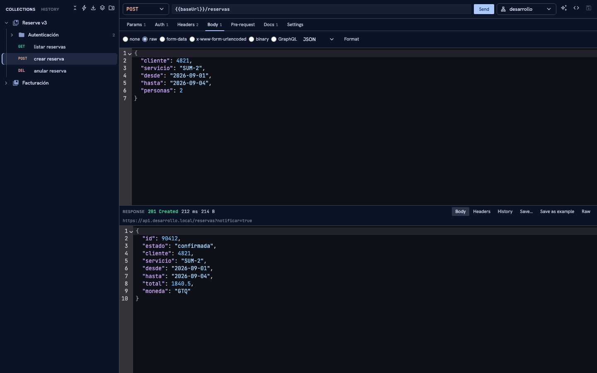
Collection tree, request and response on the same screen.
Collections, folders and requests
The tree is collection → folders → requests, and each request is labeled with its method. Reorder by
dragging, and nest folders as deep as you like.
Quick requests
For testing an endpoint without creating or naming any collection. If it turned out to be useful,
Save to… moves it into the collection you choose. All quick requests share a single chat
thread with the agent, which is right for one-off tests that aren't "about" anything in particular.
Paste a "Copy as cURL"
A collection's menu → Paste a cURL command… and you get a request ready to edit, with
method, URL, headers and body. It's the fastest way to bring over something that already works in the
browser.
With a request already open there's a second path, the quick-request one: ✦ → Write the
request…, paste the command there and Import as is. It's translated with the same
parser, without going through the agent: instant, no quota spent and nobody "improving" the
command — a curl copied from the browser has to be reproduced exactly or it stops reproducing the
problem you're looking at. The button next to it, Ask for a change, is for when you also want
to modify it: "this same cURL but against staging and without the trace header".
Generate code
Any request can be turned into cURL, raw HTTP, Go, JavaScript, Python, Java, C#, PHP, Ruby or PowerShell,
with variables resolved and secrets masked by default.
Import and export Postman
Format v2.1, round-trip: what goes in comes back out intact, even what this version doesn't
run yet.
Import
The import icon in the header opens a single dialog for everything: you paste something or drop files, and
the application recognizes on its own what it is and tells you before writing anything.
Paste: a cURL command, a request written as plain text
(POST /v1/orders HTTP/1.1 with its headers and body), a bare URL, or straight up the JSON of
a collection.
Drop files or a folder: Postman collections (v2.0 and v2.1), environments, or the full
Postman data dump, which brings collections and environments together. A folder is walked entirely;
anything that isn't a collection is skipped quietly.
A collection comes in complete: requests, folders, variables, authentication, descriptions and scripts.
Whatever this version doesn't run yet is saved anyway, so it comes back out intact on
export.
When it's done it tells you what came in, one by one, and with what caveats — at
import time, not when the request fails three days later.
Also in the URL bar
Pasting a "Copy as
cURL" straight into a request's URL bar imports it whole —method, headers and body— instead of
leaving a hundred characters of shell inside the field. Anything that doesn't start with curl is
pasted as text, as always.
What isn't supported
OpenAPI/Swagger, HAR and Insomnia can't be
imported. A file that isn't recognized tells you why: a collection exported in Postman's old
format (v1), for example, warns that it has to be re-exported as v2.1.
Export
The collection comes out in the same v2.1 format, so it can be opened again in Postman or newman.
Secrets don't travel
A variable marked as secret comes out
declared and empty, and the OAuth 2.0 token doesn't come out at all. A collection file
ends up in a chat and in a repository; whoever receives it has to put in their own credentials.
History and favorites
Everything you sent, newest first; and the two collections you're working with today, above
the other twenty.
Request history
The module's sidebar has two sections: Collections and History. The
history gathers what was sent from anywhere in the application —saved or not— grouped by day, with the method,
the status and how long it took. The search box at the top filters it by URL or by request name.
Clicking an entry of a saved request opens that request.
Clicking a quick request opens a new tab with its method and URL.
The row's ✕ deletes that entry; the icon in the header clears the whole history.
It doesn't store headers or body
And that's on purpose: a
history with the Authorization of every send is a token file nobody asked to have. That's why a
quick request can only be reopened with its method and URL — the rest isn't stored anywhere.
Favorite collections
A collection's star —on the row, on hover, or in its context menu— pins it to the top of the list. Among
several favorites, the one you starred last wins, which is the one you're using now; there's
no need to sort them by hand or undo that order when the project changes.
Variables and environments
{{like_this}} placeholders in the URL, headers, body and authentication, with
three levels of precedence.
How to use them
Precedence is dynamic → environment → collection, and one variable can use another:
protocol = https
host = api.example.com
baseUrl = {{protocol}}://{{host}} -- resolved as a chain
GET {{baseUrl}}/customers/:id?tenant={{tenant}}
Anything no level defines is flagged before sending, instead of going out with the braces
inside and failing on the other end.
Environments
An environment is a set of variables (development, staging, production). Switching environment changes what
the same request runs against, without touching it. Each environment also has its own cookie
jar: one request's login is valid for the following ones, and testing production and development at
the same time doesn't mix the sessions.
Secret variables
Marking a variable as secret does three things: it's encrypted in the vault, it's masked in the interface
and in the history, and it doesn't go out in the export or in generated code.
Authentication
Request → folder → collection, just like Postman: whatever the request doesn't define it
inherits from above.
Supported types
Type
Detail
Basic
Username and password
Bearer
Token in the Authorization header
API Key
In a header or in the query, your choice
JWT
HS256 / HS384 / HS512, signed on the spot
Digest
RFC 7616
AWS Signature v4
With region and service
OAuth 2.0
Including the native app flow (RFC 8252)
OAuth 2.0 in a desktop app
The flow uses the system browser —not an embedded WebView, which is where the user can't
check the address bar—, captures the redirect on a loopback port and uses PKCE S256
always, not just when the provider requires it.
Note
The loopback server only lives while the flow lasts. On
Windows it may trigger the Firewall prompt the first time.
Signing without scripts
HMAC signatures are declared instead of programmed: there's no JavaScript engine
inside the app.
Why there are no scripts
Embedding a script engine cost +19.8 MB against a ceiling of 80 for the whole binary.
What people actually wrote in those scripts was almost always the same thing: a timestamp, an HMAC and a
base64. That can be declared.
Declare the signature
Each computed variable has an operation, an input (with placeholders inside) and optionally a key. They
chain into each other:
HMAC, SHA, base64 and text are available. Whatever comes out of a computed variable is marked as
secret, so it doesn't appear in the history or in the export.
Run the whole collection
Every request in order, one at a time, with live progress and a pass/fail summary.
In order, one at a time
A suite is almost always a sequence: login, then whatever uses the session, then whatever uses the id
returned by the previous one. Running them in parallel would break that. There's an optional pause between
requests for rate-limited APIs.
What "passed" means
Important
That the request went out and the
server answered with a code below 400. Test scripts are saved and exported but
are not run here — Postman or newman run them. Saying "3 tests passed" about scripts nobody
ran would be a lie formatted as a report.
Collection documentation
Documentation… → Publish as note generates a document in the Notes module with the
requests, their parameters and the examples you've saved. Regenerating it doesn't overwrite
what you edited by hand: the note is looked up by its id, not its title, so you can rename it.
Write and link notes
Runbooks, procedures and incident notes live inside the vault, encrypted with the same master
password as your connections.
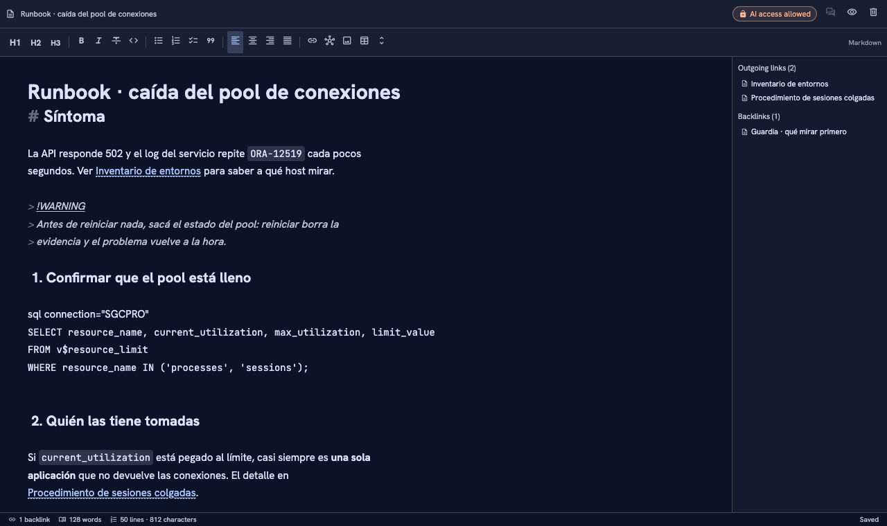
The Markdown looks formatted as you type; the markers only appear on the cursor's line.
Markdown you see as you type
Headings, bold, lists, tables, quotes and code blocks are formatted live. The Markdown markers appear
only on the line where the cursor is, so the document reads like a document and edits like
text.
Links between notes
Type [[Title of the other note]] and you get a link. The note doesn't need to exist yet: the
link creates it when you follow it. Links are resolved by title hash, so renaming a note
doesn't break the ones pointing to it.
Images
Paste a screenshot with ⌘V and it's embedded, encrypted just like the text —
not in a folder on disk next to the vault.
The lock is against the agents, not against you
Marking a note
as private hides it completely from the chat and from the MCP server —the filter is in the
query, not in an if— while you still see it and it still appears in your graph.
Runnable SQL blocks
A runbook that runs: an SQL block with a declared connection comes with its own
Run button.
How to write one
A code block with the sql language and the connection attribute:
## Stuck sessions
If the portal doesn't respond, first check who is blocking:
```sql connection="SGCPRO"
SELECT s.sid, s.serial#, s.username, s.status, s.machine
FROM v$session s
WHERE s.status = 'ACTIVE'
ORDER BY s.logon_time DESC;
```
If a session older than an hour shows up, report it in [[On-call · who to call]].
What happens when it runs
It runs against your real connection, with the same Production Guard as the editor.
The result isn't saved in the note: it's a query, not documentation. The note describes the procedure; the data belongs to this moment.
If the declared connection no longer exists, the block says so instead of running against another one.
Tip
This is what turns a runbook into something the next
on-call person uses instead of reading and retyping. Put in the exact query, not a description of
the query.
Folders, graph and search
Three ways to find something again: where you saved it, what you linked it to, or what it
said.
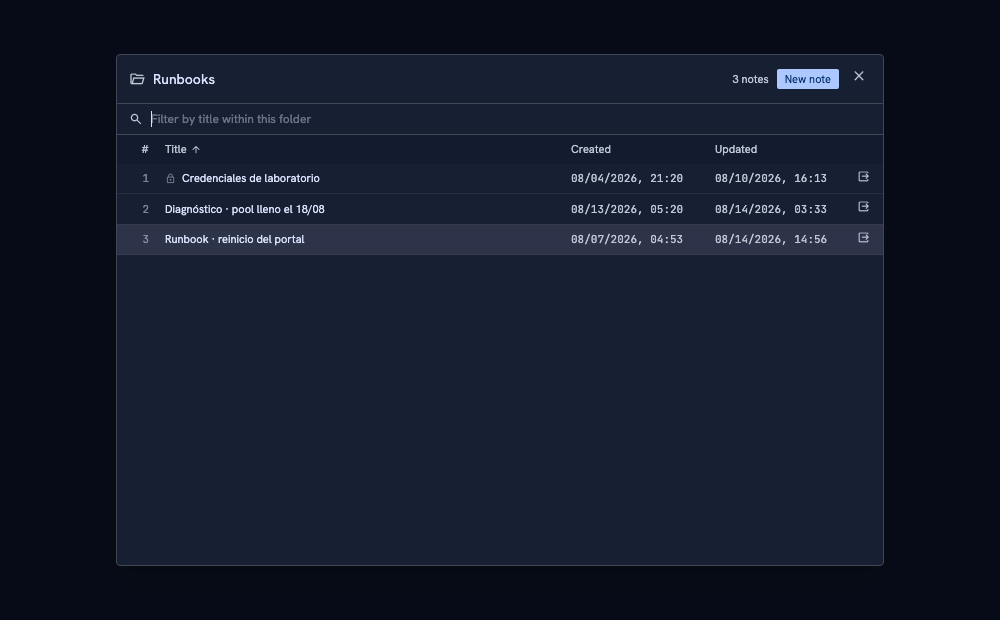
Double-click a folder (or "Open as table" in its menu) and it opens as a table; a single click collapses it.
Folders
Right-clicking a note, a folder or the empty space opens its menu: rename, duplicate (with its images and its privacy), move to another folder, pin to top, merge with another note (if either is private, so is the result), export as Markdown with the images included, copy the [[…]] link or its location, make it private or delete it. Each row's ⋯ button opens the same menu.
Each folder creates notes and subfolders already inside it from its menu, and the header button collapses or expands all.
Table view per folder: creation date, last modified date, sortable and with a search box that filters only there.
The list stays still. Without a search the order is alphabetical and accent-insensitive —"Ámbito" sits next to "ambito"—, so a note is always in the same place. When you are searching, relevance wins.
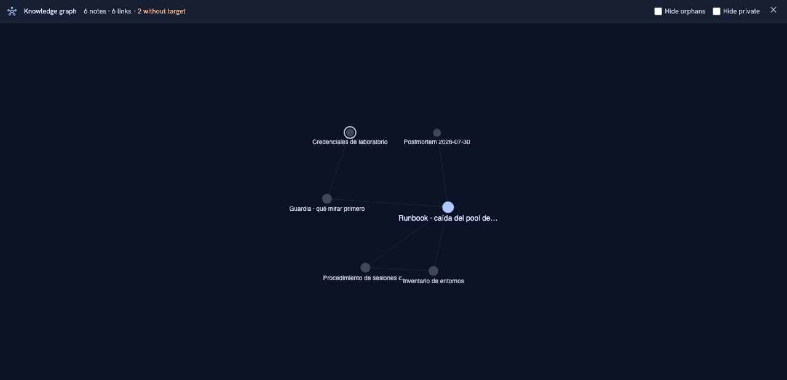
The graph builds itself from the [[links]] you've already written.
Graph and backlinks
The graph draws everything you've linked. Backlinks —the links
coming into the note you're looking at— are the ones you don't remember adding, and they tend to be
the useful ones.
Search
It finds Diagnóstico when you type diagnostico: it's accent- and case-insensitive.
It requires all the words, in any order.
It understands tag:, enlaza: and privado: as filters.
The repository: graph and diff
A Sublime Merge–style client on top of your system's git — so your credential
helpers, your ssh-agent and your hooks keep working exactly the same.
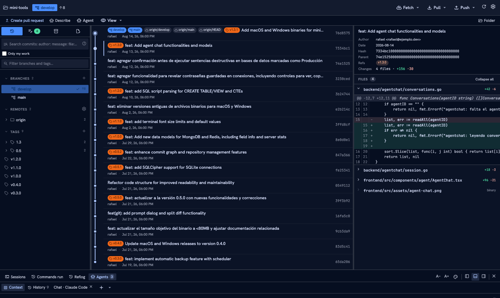
Pick a commit and its detail appears on the right, with the files and the diff.
Branches and tags
Folders by prefix: feature/… collapses into a single entry.
Pinning the branches you always use, so they stay on top.
Create branches and tags from the panel itself.
Operations
Push, pull and fetch with all their variants (--force-with-lease, --ff-only, --rebase --autostash, --prune…). If the branch isn't published, any of them offers to set the upstream without losing the flags you already chose.
Pull summary: after bringing in changes you see in one line how many files changed, lines added and removed, and the commit range (click to jump to the graph). The file list expands on demand, can be filtered, and each file opens with a click.
Rebase of both kinds: interactive to reorder and squash, and of one branch onto another from its menu. Both can be aborted.
Stage by hunk, unified or side-by-side diff, stashes, worktrees and a three-way conflict resolver.
Submodules with the state that matters: uninitialized, moved relative to the commit the parent pins, or in conflict.
Native Git Flow, with nothing to install: it writes the same config keys as the command, and finds out whether your production branch is main or master instead of assuming.
The command log
Every action records the exact command the app ran underneath, with its output and how
long it took. It's useful for learning what the button does, and for pasting the command into a ticket.
Identity, remotes and tokens
Which name you sign with, which server you talk to and with which credential — all three in
the same window.
Open it with the gear: the one on the repository's row in the sidebar, or the one in the
open tab's bar. It has three tabs: Identity, Remotes and
Tokens.
Identity: local or global
At the very top it says which name and email the next commit will be signed with, and
where that value comes from. It's the piece of information you almost never see and it explains 90 % of
"why does this commit show my old email?": a repository without its own identity inherits the global one,
silently.
This repository only writes to .git/config and overrides the global one.
Global (all) writes to ~/.gitconfig and reaches every repository on the machine that doesn't have its own.
Emptying a field deletes the key instead of saving it blank: that way the repository goes back to inheriting, which is what you mean when you clear the box.
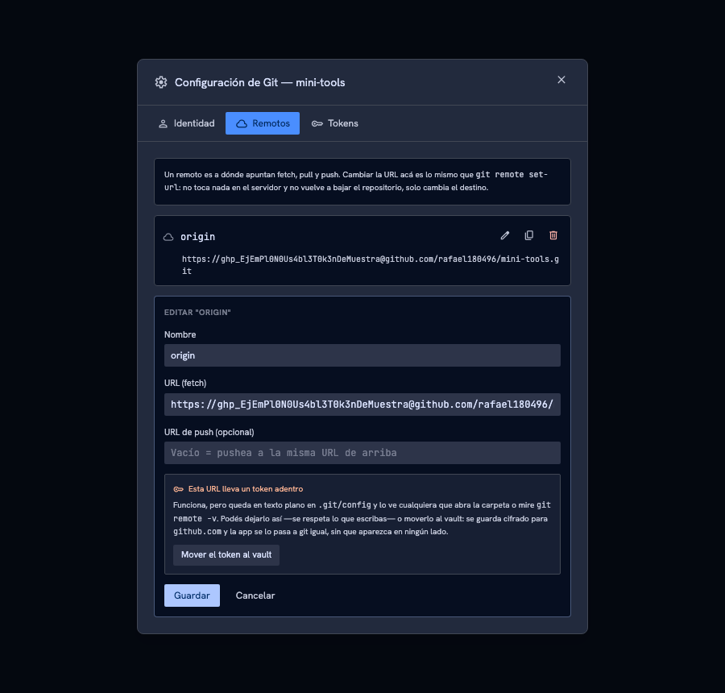
The URL is shown exactly as configured, with the token inside if it has one.
Remotes: change origin's URL
The Remotes tab lists each remote and lets you change its name, its
fetch URL and its push URL. It's equivalent to git remote
set-url: it doesn't touch anything on the server and doesn't download the repository again, it only
changes the destination.
Open the repository settings and go to Remotes. Shortcut: the gear in the "Remotes" section of the tree, or the one in the remote branches section of the branch panel, opens it already on that tab. It's also in the right-click menu on origin, as Edit remote…
Click the remote's pencil. The form opens with what's configured, untrimmed.
Paste the new URL and Save. If you also changed the name, the remote is renamed along with the tracking branches that hung from it.
Good to know
An empty push URL means "push to the
same one as above", which is the normal case. You only fill it in when you read from one place and write to
another (a mirror, a fork). Emptying it removes the detour: leaving both values set is what makes changing the
fetch URL seem to work while pushes keep going to the old server.
When the URL has the token inside
A remote configured as https://<token>@github.com/user/repo.git works, but it stores the
token in plain text in .git/config: anyone who opens the folder or runs
git remote -v sees it.
The app shows it to you, it doesn't mask it. Hiding it on screen doesn't remove it from
anywhere —it's still in the file, where anyone can read it— and in exchange it hides the only thing you need to
know: that it's there, and which one it is. A remote that stopped working because the token expired would look
just like a healthy one.
Move the token to the vault is the real way out: it stores it encrypted for that server and leaves the URL clean. The app still hands it to git just the same, with no command line or remote exposing it.
If you want to leave it in the URL, that's respected: what you type is what gets saved.
A bare username (https://rafael@github.com/…) doesn't trigger the notice: there's no secret there to move.
Tokens and remembered passwords
The Tokens tab stores one PAT per server, encrypted in the vault, and uses
it automatically for fetch, pull and push against that host. It can't be read back from the app: if you lose
one, generate another in your forge and replace it.
Below is git's credential helper, which is something else: it's git's own configuration
(system keychain, "remember for an hour", plain-text file) and it's the one used by the terminal and the hooks
— that is, the same repository when you use it outside the app.
Recover with the reflog
The safety net under reset --hard, rebase and push --force.
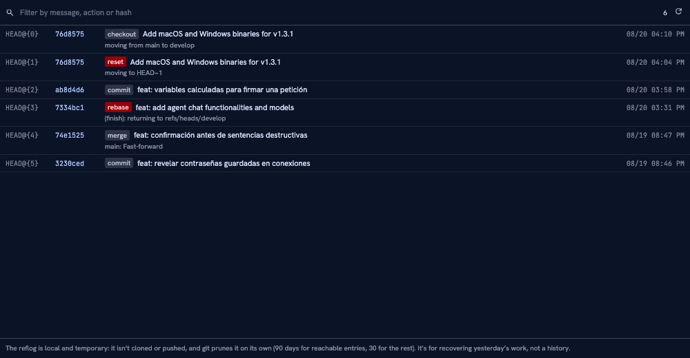
The last two hundred HEAD movements, with the history-rewriting actions highlighted.
Recover a lost commit
Open the Reflog tab in the bottom panel. It lists the latest HEAD movements, with history-rewriting actions marked in red.
Find the commit by its message — the filter at the top searches by message, action or hash.
Create a branch there. It's the action offered first because it doesn't move anything, doesn't touch your uncommitted work, and gives the lost commit a name of its own.
If you really want to move the current branch back to that position, reset --hard is there too — behind a confirmation that says what will be lost.
Careful
The reflog is local and temporary:
it isn't cloned, it isn't pushed, and git prunes it on its own (90 days for reachable entries, 30 for the
rest). It's for recovering yesterday's work, not a history.
SSH and local terminals
A real terminal (PTY), not an emulation: top, vi and colors
work.
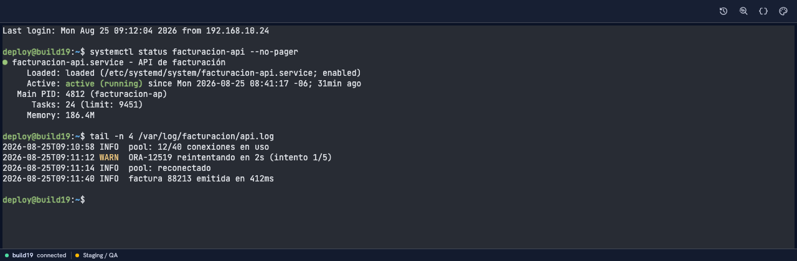
One tab per session —you can have several against the same server—, with history, error analysis, snippets and a color theme.
Tools on top, status at the bottom
At the top right, four icons and the chat: history, analyze,
snippets and theme. What each one does is in its tooltip — on a terminal,
the screen where content rules, the chrome has to get out of the way.
At the bottom left, the footer: which server the tab is bound to, whether the session is
still alive and which environment the connection is marked with (in its color; red with a
glow if it's production). It goes there and not on top because that's where the command output ends, which is
where you're already looking when you wonder whether it was still connected.
Sessions
A real interactive terminal (xterm.js), with a PTY and automatic resize.
Closing the tab ends the session on the remote side, it doesn't leave it hanging.
Local terminals (PowerShell, zsh, bash, Git Bash…) in the same module, with the same snippets and their own encrypted history.
If the server password has expired
When the account's password has expired, the server won't let you in: it asks for a new
one. The terminal says so plainly and opens a dialog to change it, with the reason the server gave in
view ("You are required to change your password immediately").
Type the new password twice. It's the only place in the app where you're asked to repeat
it, and it's not a formality: here a typo isn't rejected, it becomes the account's real password and locks you
out of the server.
Change and connect changes it on the machine. If the server rejects it for being too
short or in the dictionary, you'll read its explanation, not a generic "couldn't do it".
Once the server approves, the new password is saved in the vault connection and the
terminal reconnects by itself.
Server first, vault second
The order matters: if it were saved
before testing it, a rejection would leave in the vault a password the machine never accepted, and the next
connection would fail as if it were misconfigured. For the same reason, cancelling the dialog touches nothing
— the server password is still expired and the terminal, still disconnected.
This applies to connections that authenticate with a password. A key-based connection has
no account password to expire. Test Connection, in the connection dialog, also names the
expiry instead of the generic authentication error.
Several terminals against the same server
You can have as many as you want against the same host: one compiling, another watching a
log, another for poking around. Each tab is a separate session, with its own buffer, its own directory and its
own scrollback.
Hover over the server's row in the sidebar and press + (or New terminal
in its ⋮ menu). It always opens one more session.
Clicking the name does the usual thing: it opens the terminal, or takes you to the one
that's already open. That way browsing the tree doesn't leave stray shells against production.
From the second one on, the tab is numbered: Terminal — PRODMAIN (2).
A single connection
The sessions are not several
SSH connections: they're several channels over the same one. One authentication, one socket and one entry in
the server log, even with five tabs open — just like the console and the file explorer, which already shared
the connection.
In the sidebar, the server shows how many live sessions it has when there's more than one.
Disconnect closes all of them; closing a tab closes only its own.
Everything that follows a terminal follows that terminal: the directory, the line history and
Analyze error belong to the tab you asked from. What asks about the connection —the
chat's @ssh: and the MCP tool— reads the terminal you last typed in.
Snippets
Saved commands, reusable in any session, with folders and search. Run executes each line;
Paste types them without confirming, for when you want to review before pressing Enter.
The script is written in an editor with shell highlighting: Tab indents,
Ctrl+Enter saves and Esc cancels. The same form chooses the folder.
The panel widens by dragging its left edge and remembers the width; double-clicking the
edge restores the original. To organize: drag a snippet or a folder onto another folder (or onto the
background, to move it to the root), double-click a folder to rename it, and the + on its row
creates a snippet already inside it.
Encrypted, filtered history
Commands are saved per connection, encrypted. Lines that look like they carry a password aren't
saved — a history that records the full mysql -p… is a credentials file by another
name.
Analyze an error
The magnifier button (Analyze) sends the terminal output to the agent with the server's
operating system as context — or exactly what you have selected, if there's a selection. It returns text: it
doesn't run anything. The chat button is right next to it, in the same row: going from
"analyze this for me" to "ask it something else" shouldn't mean crossing the whole window.
SFTP explorer
Two panels, and each one points wherever you want: your machine or any of your servers.
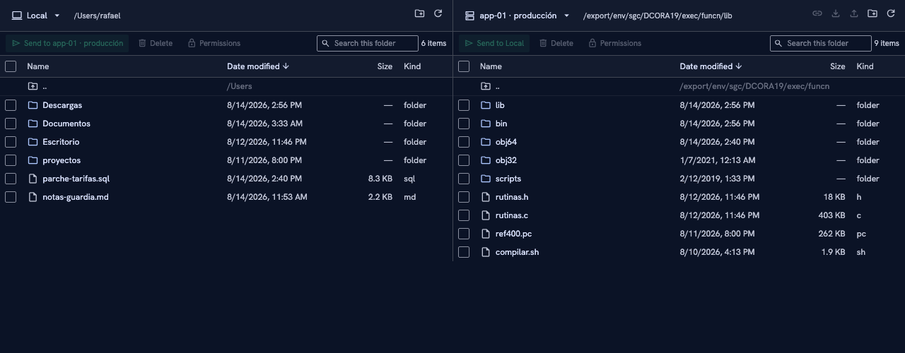
All four possible combinations, including server ↔ server.
It opens from the SSH tree and reuses that connection — no need to authenticate again. Each
panel picks its host at the top left, so there are four combinations: local → server,
server → local, server → another server (streaming through your machine) and
local → local.
Getting around
Double-click a folder to enter it; a file opens in an editor tab.
The ".." row goes up one level, and shows where to: on a deep path knowing you're going up isn't enough, you need to know where.
Each panel's search box filters what's already listed —it doesn't descend into subfolders or ask the server again—, so it's instant. Esc clears it.
Columns can be sorted and resized, and the ones that don't fit hide themselves: first Kind —which is the extension, already in the name— and then Permissions. We'd rather hide what's expendable than cut it off: a missing column makes sense, a half-shown one looks like a bug.
Select several, as in any file explorer: a single click selects a row, Ctrl/Cmd+click adds or removes without losing the rest, Shift+click selects the range from the last row you touched, and each row's checkbox toggles without holding any key (with Shift it also selects a range). The header checkbox selects everything the filter shows and indicates when some are selected. Ctrl/Cmd+A selects what's visible, Esc clears, and clicking the "N selected" counter clears too.
Transfer
Select with the checkboxes, with click and Shift/Ctrl (see above), or just drag from one panel to the other — dragging a row that's already selected takes the whole selection.
The button says where it goes: "Send to app-01 · production", not a generic "Send".
If something already exists on the other side, you're asked before it starts and for each file: replace, skip or rename.
The queue shows percentage, bytes and files live, and each transfer can be cancelled on its own without touching the others. Large batches run in parallel.
With hundreds of files there's a wait before the copy
Checking what exists on the other side and counting what's inside folders are queries to the server, and
with a large selection —especially between two remotes— they take a few seconds. The row appears in
the queue as soon as you press the button saying what it's doing ("Checking destination…",
"Preparing…"), and meanwhile Send stays disabled: there's no need —and it's not a good idea— to press
it again, because each click would be one more transfer.
Permissions
Without remembering the octal
The Permissions
button in the action bar —or right-click → Edit permissions— opens a dialog with
Read/Write/Execute checkboxes for Owner, Group and Others, and shows the equivalent chmod as you
change them.
It applies to the whole selection, not just the row you right-clicked — same as Send and
Delete. When several items with different permissions are selected the dialog warns you: chmod is
absolute, so on saving they all end up with the same mode. If any fail (another owner, a read-only mount) it
says which ones and the rest are applied anyway.
It's not chmod -R
On a folder it changes the
folder's permissions, not those of its contents.
The first time on macOS
System permissions
When you open Downloads, Desktop or
Documents from the local panel, macOS asks for permission once. If the dialog doesn't appear, grant it in
System Settings → Privacy & Security → Files and Folders. Keep in mind that a freshly installed
version counts as a different application for macOS: the permission is requested again.
Port Killer
Which process is holding port 3000 —and ending it— without leaving the app or remembering
lsof, netstat and kill.
It lives in the Utilities module (the hammer-and-wrench icon in the sidebar menu). Click Port Killer
and it opens in its own tab; if it's already open, the click takes you to it. It works the same on
macOS, Windows and Linux.
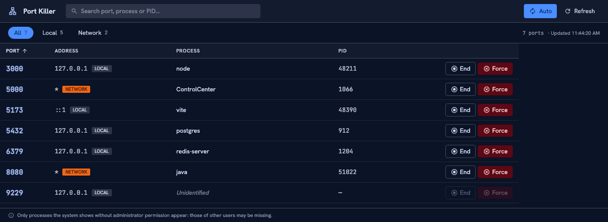
Every listening port, with who holds it and whether it's exposed to the network.
The list
One row per TCP port that's listening right now: the port, the address it
listens on, the process and its PID. The address comes with a badge:
Local — it only accepts connections from this machine (127.0.0.1, ::1). A typical dev server.
Network — it listens on every interface, so other machines on the network can reach it. Worth a look if you didn't expect it.
The search box filters by port, process name, PID or address, and the All / Local / Network chips
(each with its count) answer at a glance what's exposed to the network. Click a column header to sort
by it. Refresh reads again, and Auto does it every few seconds. On a row, Open
(it shows when you hover it) opens http://localhost:<port> in the browser, handy when the port is a web server.
It costs nothing while closed
Nothing in this utility runs in the background. The tab only reads the ports while it's open and in view:
switch to another tab, or minimize the window, and it stops asking. Close the tab and there's nothing left running.
Ending a process
Click End on the row. The app confirms first, naming the process, its PID and the port it frees.
The process is asked to shut down cleanly. If it ended, the port is free and you'll see a notice saying so.
If it ignored the request and keeps running, the notice says so: use Force, which cuts it off immediately (the process loses anything it had unsaved).
Windows
Windows has no "ask politely" for an arbitrary process, so there End and Force do the same thing.
Permissions
Your own processes end directly. A process that belongs to another user or to the system needs
administrator permission: the app tells you so and, if you accept, asks the operating system for it —the password
dialog on macOS, the pkexec prompt on Linux, the UAC prompt on Windows—. Say no there and the process
keeps running; nothing is ended without that approval.
What you won't see
Without administrator permission the system only reveals the processes of your own user, so those of other users may
be missing from the list. System processes, this very app and any process the system wouldn't identify show
without the buttons: ending them isn't offered from here.
Linux
It uses ss (or lsof if there's no ss). A minimal distro with neither shows an error
explaining it, instead of an empty list that would read as "nothing is listening".
Activity Monitor
What is using your CPU and memory right now, and how much network is going in and out —with
the option to end whatever is misbehaving— without opening the operating system's own monitor.
It's in the Utilities module, next to Port Killer. It opens in its own tab and
works the same on macOS, Windows and Linux.
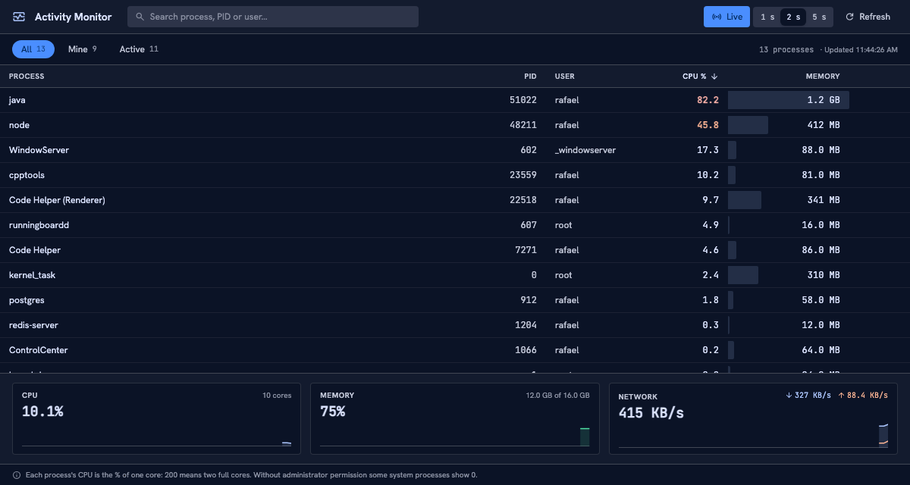
The process list on top, the whole machine's state at the bottom.
The process list
One row per process with its name, PID, user, CPU %
and memory; a bar behind each memory figure compares them at a glance. Click a column header to
sort by it —the default is CPU, biggest first—. The chips All / Mine / Active narrow
the list to everything, only your user's processes, or only those using CPU right now; the search box filters by
name, PID or user.
CPU is the percentage of one core: 200 means two full cores. Above 25 % the figure is highlighted, and above 80 % it turns red.
Rows with the same value keep a stable order, so the list doesn't "dance" between refreshes.
The summary at the bottom
Three cards keep the whole machine in view while you scroll the list: CPU (total, over every core),
Memory (used out of installed) and Network (download and upload rate), each with the last
two minutes drawn as a line.
Live, paused and the interval
Live refreshes every few seconds; click it to pause and the list stays still, handy to read a
figure without it moving. Next to it you pick the interval: 1, 2 or 5 seconds. Refresh reads
once, right now.
It costs nothing while closed
Nothing runs in the background. The tab only reads the system while it's open and in view: switch to another
tab, or minimize the window, and it stops; when you leave, the app also drops the reading it kept to compute the CPU %.
Close the tab and nothing is left running or stored.
Ending a process
Hover a row (or click it) and two icons appear: End, which asks the process to shut down cleanly, and
Force, which cuts it off immediately. Both confirm first, naming the process and its PID, and both
work exactly like in Port Killer, including the administrator
permission request for processes of other users. System processes and this very app have the buttons disabled.
What it doesn't show
There's no disk or per-process network column: those numbers don't exist in a portable way, and the ones that do need
administrator permission. On Windows processes don't carry an owner, so the User column and the
Mine chip don't appear. Without administrator permission some system processes report 0 % CPU.
Docker
See and operate your containers, images, volumes and networks —and read their logs live— without
leaving the app or typing docker ps.
It's in the Utilities module and opens in its own tab. It works with whatever Docker
you already have —Docker Desktop, OrbStack, Colima or Docker Engine—, because it talks to the docker command
and respects its active context; the context name and version show next to the title so you know which engine you're
looking at.
In the sidebar, Docker unfolds a submenu —Containers, Images, Volumes, Networks and Builds—, like Git's, each with its count. Clicking one opens the Docker tab on that section (or takes you to it if it's already open) and highlights it in the menu. The tab itself has no menu of its own: it shows the section's content across the whole width, with the section name next to the title. The counts update while the tab is in view.
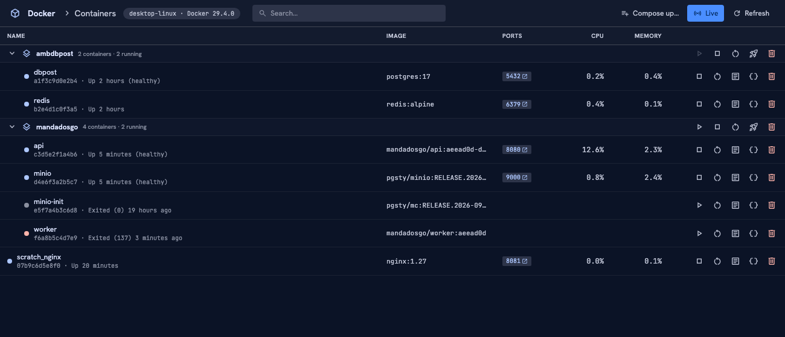
Containers grouped by Compose project, like Docker Desktop.
Is Docker installed and running?
The first thing the tab does is check. There are three outcomes. The same check is done by the Utilities list in the sidebar: if Docker isn't installed or its engine isn't running, the Docker entry shows disabled (greyed out, with an Unavailable tag and the reason on hover) and won't open a tab that would only show an error. It re-checks every few seconds while that list is in view, so it enables itself when Docker starts; clicking the entry also re-checks.
Not installed — it says so and offers a link on how to install it, plus a Check again button.
Installed but the engine isn't responding — it shows what Docker answered and, on macOS and Windows, an Open Docker Desktop (or OrbStack) button. It re-checks every few seconds, so as soon as the engine is up the lists appear by themselves. On Linux the engine is a system service: start it by hand.
Running — the lists.
Containers
Grouped by project (the Compose stack), with the standalone ones at the end. Each row shows a state dot —
blue running, grey stopped cleanly, red exited with an error (the one you're usually
looking for)—, the service name, its short id and status, the image, the published ports and the CPU and memory of
the running ones.
Click a port chip to open http://localhost:<port> in the browser.
Per row: start / stop, restart, logs, inspect and delete.
On the project line (Docker Compose): start, stop, restart, up (create or recreate what's needed and leave it running, docker compose up -d) and down (stop and delete the project's containers and networks; volumes are kept). Compose runs with the same files the project was started from, read from its containers' labels; up can take minutes if it pulls or builds images, and a spinner shows while it works.
Compose up… in the toolbar lets you pick a docker-compose.yml from disk and bring up a new project from it.
Deleting a container and down always ask first. Named volumes are kept; whatever was written inside the container isn't.
Live logs
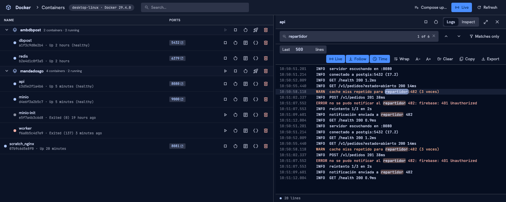
The panel opens next to the list; the table gives up the image, CPU and memory columns to make room.
Click a container's name (or its logs icon) and its logs open on the right, live:
Search with an index. Type in the search box and every match is highlighted; the counter says 3 of 12, and Enter / Shift+Enter (or the arrows) jump to the next and previous match. Matches only hides the lines that don't contain the text.
Size, your way. Type any number of earlier lines to load (1 to 10,000; the presets are just suggestions), make the text larger or smaller, and drag the panel's edge to widen it (double-click goes back; the button at the top maximizes it).
Auto-refresh.Live is on by default: new lines arrive by themselves. Click it to pause and read without movement. Follow keeps the view on the last line and turns off by itself if you scroll up.
Stop or start the container from the panel's own header, without going back to the list.
Also: show or hide the time, wrap long lines, clear the screen and copy. Lines with error or fatal show in red and warn in orange.
Export logs
The Export button saves the logs to a file (.log), choosing where in the system dialog. You set a maximum number of lines, from 100 to 10,000 (the last ones are saved, which is where the problem usually is). Two options: from the container history —the last lines Docker has for it, not just what the panel shows— or what is on screen, with the search filter applied. The notice at the end says how many lines were really written, which can be fewer than the limit if the container doesn't have that many. The file is created readable only by you, since a log can hold data that isn't for anyone. Build logs export the same way (next section).
It costs nothing while closed
The list only refreshes while the tab is open and in view. The log stream is the only thing that stays open, and only while
its panel is: closing the panel, switching tabs or closing the app ends it. Nothing is left running.
Builds
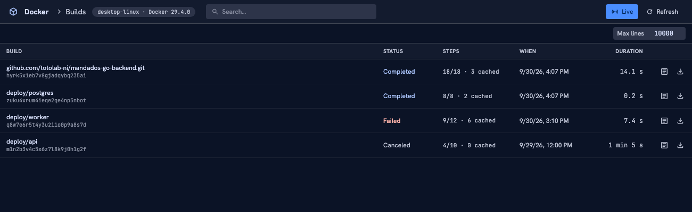
The build history, with a log you can read or export.
The Builds section lists the image build history (docker buildx history): name, status —completed, failed, canceled—, steps (done, total and how many came from cache), when and how long it took. Click one to read its full log in the panel (a very long one shows only its end, where the error usually is), and use the download icon to export it to a file, with the same 100 to 10,000 line limit. Needs buildx 0.20 or newer; an older Docker says so instead of showing an empty list.
Images, volumes and networks
Three simple tables with inspect (the full configuration, ready to copy) and delete. An image shows
how many containers use it, and a volume how many mount it; what is in use can't be deleted —the button is disabled and
says why—, and neither can Docker's default networks.
What it doesn't do
It doesn't pull images, doesn't run a build, and doesn't prune. It brings projects up and down with Compose, but doesn't edit their files.
The goal is to see, read and export logs and start, stop and delete; for the rest the terminal is still the tool.
Logs lose terminal colors on screen (they'd show as stray codes).
The chat, in every module
Claude Code, Codex CLI and Antigravity CLI, detected automatically on the PATH. The same chat
from the SQL editor, an SSH terminal, a note, a repository or an HTTP request.
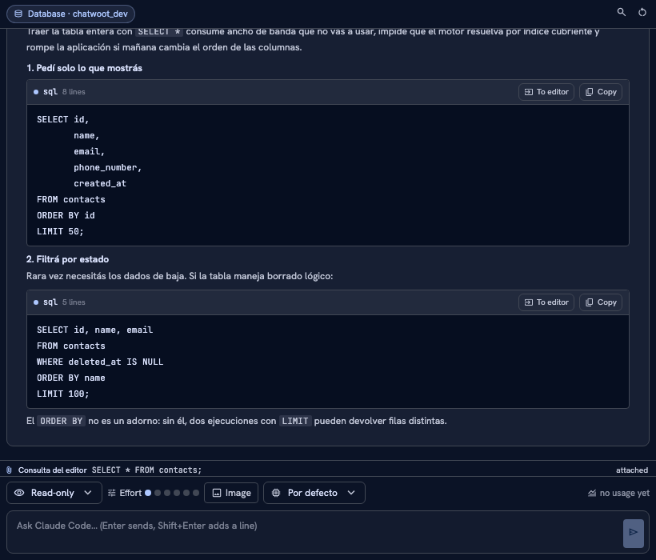
The chat knows what you're working on: switching tabs updates the context, it doesn't restart the thread.
Open the chat
⌘L / Ctrl+L opens it on whatever you're looking at. There's one conversation
per work context: a connection's thread survives you going to another tab and coming back, and doesn't
get mixed up with a repository's.
Leaving doesn't cut it off. If the agent is answering and you go to an SSH terminal, to a
repository or close the panel, that turn keeps running and the full answer is waiting for you when you come
back — along with whatever you had left typed in the message box.
Continue in the chat, with the context already attached
One-shot analyses —the terminal's Analyze error, an execution plan analysis, an HTTP
request's AI actions— have Continue in chat. The chat opens with what was analyzed
attached as chips: the exact terminal lines with the detected operating system, the request and
its response, and what the agent answered. That way you can ask follow-ups without explaining anything again.
Each chip expands so you can read exactly what will be sent, and is removed with the ×. They
travel with the next message, and whatever you'd already typed in the box isn't overwritten. On an HTTP request,
the AI menu also offers Ask in chat from scratch, with the request attached and the credentials
masked.
Names with spaces are referenced in quotes —@db:"Prod Facturación/CLIENTES"— and the
@ picker adds them for you.
The agent proposes; applying is your click
No AI action runs what it just wrote. They return text and you decide:
Module
What you can ask for
Databases
Write a query from natural language, explain and fix the engine's error, analyze an execution plan
HTTP
Explain the response, diagnose the failure, write the request, draft its documentation or its tests
Git
Draft the commit message from the staged diff and the repository's style
SSH and local terminal
Explain what's failing in the terminal output, with the server's operating system as context. A single-command block from the answer can be sent To terminal: it's typed in, without Enter
Notes
Query your knowledge base, and —with explicit permission— write down what it found out
Conversation history
The panel's History tab lists every conversation, grouped by module or by agent, with a
search box. Opening one resumes it in its own context —a conversation belongs to the resource
where it was born— and the messages are redrawn by reading the CLI's own transcript.
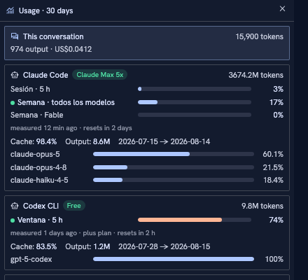
Usage per agent, read from what each CLI already records — not a made-up number.
How much you've spent
The Usage tab reads what each CLI already stores about its own sessions. It's their
estimate, not a parallel count by the app: making the number up would be worse than not showing it.
The @ system: you choose what crosses over
Type @ in the chat and reference something specific. Before sending, each chip
expands and shows exactly what will be injected.
What you can reference
Reference
Injects
Never
@db:Prod/clientes
Columns, types, primary and foreign keys
No rows, no DSN, no username
@file:backend/git/log.go
The file from the open repository
Nothing outside the repository
@git:staged
The staged diff
—
@explain:last
The last saved execution plan
The data the query returned
@note:"Runbook"
The note's Markdown
The content of a private note, under any circumstances
You see it before it's sent
Why
A reference that expands silently is indistinguishable from a
leak. Each chip shows its resolved content before the message goes out, so what reaches the model is
what you saw.
Embedded MCP server
The agent asks, instead of you sending it everything up front.
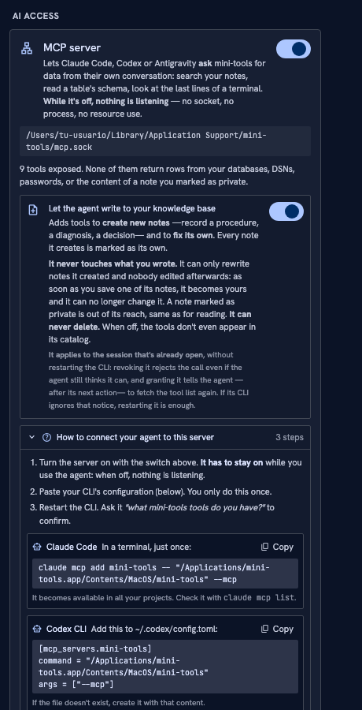
Turn it on, copy the configuration and the CLI can already ask.
What it exposes
Turn it on and any compatible CLI can ask the app for a table's schema, search your notes or read the last
lines of a terminal — over a local socket, not over the network.
Access control
Each tool has its own switch.
Creating notes is a separate switch from reading them: turning the server on shares read access, that one also allows writing.
Everything goes into an access log: what it asked for, when and what it was given.
Private notes are always out of reach, with no switch that changes it.
Note
The server doesn't turn itself on at
startup. The app remembers whether you left it on, but that's a reminder for the interface, not an
automatic start.
Appearance and font size
Settings → Appearance. Three different sizes, because they're three different
things to read.
Language
The app speaks English and Spanish. Pick one in Settings → Appearance →
Language, or with the language button on the unlock screen, which is there precisely for
whoever can't read the language it started in. It switches instantly —no restart, no terminals closed, no
queries cut off— and it's remembered, on the unlock screen too.
The first launch is in English. So is the first launch after updating from an earlier
version: the language had never been chosen. You change it once.
Everything the app says is translated: menus, notices, error messages and what it asks the AI agents,
which reply in the chosen language. Your data isn't: connection names, notes and results
stay as you wrote them.
The ? button opens this help in the chosen language.
Interface font size
From 90 % to 150 % in five steps, and it enlarges everything: the sidebar, menus,
lists, dialogs, labels and icons, in every module. It applies immediately and is remembered between
sessions.
Step
What for
Compact · 90 %
Fits more information on screen
Normal · 100 %
The usual size
Large · 115 %
A bit more body, without changing the layout
Larger · 130 %
For reading without leaning into the screen
Maximum · 150 %
The largest before the bars stop fitting
It scales the text, not the spacing: it isn't a window zoom, so the layout holds and on small screens
the bars wrap into two rows instead of overflowing.
On the unlock screen too
The chosen size applies also to
the screen that asks for the master password. That's deliberate: if the setting only worked with the
vault open, someone who can't read the app couldn't read the form asking for the password to fix it either.
The code editor
It has its own font and its own size, plus line wrapping, line numbers and
tab width. It's chosen for reading code, not interface, so it doesn't follow the size above. The dialog's live
preview shows how each typeface looks — including system ones, which depend on this machine having them.
The terminals
The local and SSH terminals share the same size (they're the same widget: two different sizes for "the
terminal" wouldn't mean anything) and the same color theme.
Light and dark theme
The app's theme is switched with a button. The editor's and the terminal's follow it by default
("Automatic"), or can be pinned to a specific theme by hand.
Where these buttons are
At the bottom of the sidebar, next to the version: theme,
help and settings. With the sidebar hidden they're stacked in the icon
column, above the logo.
Why there
They used to live at the top right, in the SQL editor's
context bar — which disappears in a note, a terminal, an HTTP request or a repository. Two settings that apply
to the whole app can't depend on which tab you have open: to change the theme you had to open a query first. The
bottom of the sidebar is always there, in every module, and it was already where the version and the help
lived.
Updates
One check per session, a discreet notice, and the click downloads the file for your system.
How it works
On startup, the app asks GitHub once whether there's a release newer than the binary you're
running. If there is, a notice appears at the bottom of the sidebar and the click downloads the file for
your system directly —the .dmg on macOS, the .exe on Windows—, without having
to figure out which one it was among the release's attachments. The tooltip says which file it will download
before you press it.
If there's no network
It's never an error
If the check fails —no network, no permission,
a server that doesn't answer— nothing happens: no notice, no message, and the app starts just
as fast. A "new version available" is a luxury that must never interrupt or delay normal offline use of the
program.
Updating by hand
Download the new package from Releases and
replace the old one. The vault isn't touched: it lives in the application's data folder, not
inside the binary, and schema migrations run by themselves when it opens.
Test an endpoint someone sent you over chat, and keep it
From a pasted curl to a saved, documented, searchable request.
In the browser where it works, Copy as cURL.
In mini-tools: HTTP module → a collection's menu → Paste a cURL command…. You get a request with method, URL, headers and body. (If you already have a tab open: ✦ → Write the request…, paste and Import as is.)
Replace the host with {{baseUrl}} and define the variable in the development environment. The same request works against both environments.
Send it. If something fails, ✦ → Diagnose the failure: it goes with the client configuration in front of it, which is where half of transport errors are explained.
Save as example adds the response to the request's documentation. Then Documentation… → Publish as note and it's in your knowledge base, searchable and linkable.
A query you don't know how to write, against a schema you don't know
The agent sees the DDL of the relevant tables; never a row.
Open the editor on the connection and press ⌘I / Ctrl+I.
Ask for it in plain words: "August invoices with more than three complaints, with the customer's name".
The app sends it only the DDL of the relevant tables —columns, types, keys— and never a row.
Read the explanation on the side, apply it to the editor, and run with ⌘↵. If the engine returns an error, Fix sends it the error verbatim: an ORA-00942 carries more information inside than any paraphrase.
Document an incident while you fix it
So the note is usable by the next on-call person, not just readable.
Notes module → On-call folder → the folder's "+": the note is born inside it.
Paste the dashboard screenshot with ⌘V: it's stored encrypted inside the vault, just like the text.
Put the query you used in an sql connection="…" block. The next on-call person runs it from the note.
Link the runbook you followed with [[…]]. The graph and backlinks do the rest by themselves.
Recover the commit you deleted ten minutes ago
Without touching anything you have now.
Git tab → bottom panel → Reflog tab.
The reset shows up marked in red; the commit you had before is the one on the row below.
Create a branch here. It doesn't move anything you have now.
Switch to that branch whenever you want, or bring over just what you're missing with a cherry-pick.
Keyboard shortcuts
The ones that work across the whole app. Each module adds its own in its tooltips.
Shortcut
What it does
⌘↵ / Ctrl+↵
Run the query, or send the grid's pending changes
Ctrl+Shift+↵
Run the PL/SQL block under the cursor
⌘I / Ctrl+I
Query assistant: ask for a query or fix the one that failed
⌘L / Ctrl+L
Open the chat on whatever you're looking at
⌘S / Ctrl+S
Save the active tab (query, note, file, request)
⌘V
Paste an image into a note or the chat
Ctrl+Space
Force autocomplete, even where it doesn't open on its own
Tab
Accept the grey suggestion, or jump to a shortcut's next placeholder
F5
Refresh the active connection's catalog
Esc
Close whichever panel, menu or search box is open
Middle-click
Close the tab you're pointing at: workspace tabs, "Result N" tabs and files open in the Git editor
On this page
/ puts the cursor in the search box at
the top, and the arrows plus Enter open the result.
Security
What's encrypted, what never leaves the backend and what an agent sees.
Encryption and isolation
Per-column encryption
Every DSN, SSH password, private key and passphrase is encrypted with AES-256-GCM before being stored. The key is derived from your master password with Argon2id and is never persisted.
No bypass
Without the correct master password the app doesn't start — not even through the frontend's internal calls.
The DSN never leaves the backend
It never reaches the interface or the logs, not even in debug mode. "Export settings" redacts passwords and keys before writing the file.
Backups tied to the password
Creating and restoring ask for your master password, verified against the backup file itself — so one that ends up on a USB stick or in the cloud is useless without it.
Nothing is sent anywhere
There's no app server and no telemetry. What goes out to the internet is what you point it at.
The AI only sees what you show it
@ references expand before being sent, private notes are always excluded, and no secret from an HTTP request reaches the model.
Vault backups
Manual (with name and date) or automatic every N hours to the folder you choose, where the
scheduler always replaces the same file. Both ask for the master password, and restoring verifies it against the
file itself before touching anything.
Both are managed from Settings → Vault, and that's also where you see how the last manual
backup ended, with the full path of the file written — or the notice that you closed the system
dialog without choosing where to save it.
Where the vault lives
In your operating system's application data folder, not inside the binary. That's why replacing the
executable with a new version loses nothing, and why the backup is a file you can copy.
Terms and conditions
What you can do with mini-tools, what it does with your data and what remains your responsibility. In short: it's free, it's yours, and it's provided as it is.
License
mini-tools is free software under the MIT License (copyright 2026 rafael). You can use it, copy it, modify it, distribute it and use it at work or commercially, as long as you keep the copyright notice and the license text in the copies you distribute. The full text is the LICENSE file in the repository, and it is the one that prevails over this summary.
No warranty
The software is provided "as is", without warranty of any kind, express or implied —including fitness for a particular purpose or that it is free of errors—. The authors are not liable for any damage, data loss or downtime arising from its use. Official binaries are not signed, so macOS and Windows warn when opening them for the first time (see Install); the Windows build is cross-compiled and each version says in its release notes whether it was tried on a real Windows.
Your data and your privacy
It stays on your machine. Connections, passwords, keys and notes live in an encrypted vault in your operating system's application data folder. There is no account, no app server and no telemetry.
The master password can't be recovered. It isn't stored anywhere: if you lose it, the vault and its backups can't be opened. Keeping the password and the backups safe is up to you.
What does go out to the network is only what you ask for: connections to your databases, servers, APIs and Docker, one update check to GitHub on startup (it fails silently without a network), and whatever the AI CLIs you choose to use send to their own provider.
Screenshots in this help are generated with made-up data; they contain nobody's information.
Responsible use
mini-tools runs real operations: queries and statements against your databases, commands on remote servers, terminating processes, deleting containers, images and volumes, and purging logs. The confirmations and the production mark are help, not a safeguard; you decide, and you answer for, what runs and where. Use it only on systems you are authorized to access, and respect the policies of your organization and of the services you connect to.
Third-party tools
The AI agents (Claude Code, Codex CLI, Antigravity CLI), Docker, the database engines and the other programs mini-tools talks to belong to their own authors and are governed by their own terms and prices; mini-tools doesn't bundle or resell them. What you send to an AI agent is handled by its provider under its policies.
Changes
These terms can change from one version to the next, and this page describes the version shown in the top bar. Questions, reports and contributions go to the project's repository.
Frequently asked questions
Do I need an account or a license?
No. It's MIT, there's no sign-up and no app server.
Does it work offline?
Yes. Fonts and icons are bundled and there's no CDN. It only needs the network to reach your database, your server or your API — and for the AI CLIs, which talk to their provider.
What happens if I lose the master password?
The vault is lost. There's no recovery: the password isn't stored anywhere, which is what makes a stolen backup useless.
Do the agents see my credentials?
No. The DSN never leaves the backend, private notes are out of reach at the query level, and anything that goes into a prompt from the HTTP module carries unresolved placeholders and masked credential headers.
Do I have to install Claude Code or Codex?
Only if you want to use them. The app detects them if they're there, and nothing happens if they aren't.
Does it replace Postman or DataGrip?
For day-to-day support work, yes: it's what those tools do, in one window and without an account. For what's very specific to each (team-shared collections, SQL refactors), it doesn't try to be.
I updated and the app is in English — why?
Since 2.8.0 the app speaks English and Spanish, and English is the default until you pick another language. Switch to Spanish with the language button on the unlock screen or in Settings → Appearance → Language, once: it's remembered. See Language.
Can I use it on Linux?
It builds and runs, but it isn't packaged or tested there: there's no published artifact. Build it from source with wails build.
What about the screenshots in this help?
They don't come from a real installation: they're generated by mounting the components in a headless browser with made-up data (./scripts/uishot.sh). There are no paths, hosts or credentials of anyone — not because they were removed, but because they were never there.
mini-tools — MIT. Go + Wails v2 + React. Documentation for
v2.9.0; this page doesn't make a single external request.
Source ·
Downloads ·
Changelog ·
Terms